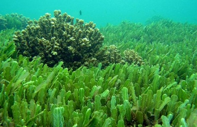

万能海藻
生活中应用
生产中利用
生态中作用
无限的潜力
海藻在生活中的应用
食用
1.抗病毒，防癌抗癌，海藻提取液蛋白多糖类可对抗各种病毒。
2.预防白血病藻胶酸可与放射性元素锶结合成不溶物排出体外，使锶不致在体内引起白血病等。
3.降血压。
4.抗甲亢，海藻中所含的碘可用来纠正因铁碘而引起的甲状腺功能不足，同时也可暂时抑制甲亢的新陈代谢率而减轻症状。
5.保护心脏。海藻除了含有对心血管有保护作用的多糖、脂肪酸外，还富含硒元素。
美容护肤
1.治暗疮
海藻面膜能够修复因痘痘和粉刺留下来的痘疤，还能够消炎杀菌和调节肌肤的油脂分泌，对治疗暗疮有非常好的疗效。
2.除皱纹
经常做海藻面膜，能够让我们的肌肤更加有弹性和紧致，让已经松弛的肌肤回到18岁的紧致有弹性，从而达到祛除皱纹的功效。
3.防晒
海藻面膜能够修复我们的肌肤因为暴晒以及睡眠不足而引起的黑斑，让我们脸上的黑斑刚刚冒出来，就被一举消灭掉。
4.补水
海藻具有强效的补水功效，能够为缺水的肌肤及时补充所需的水分，让干燥的肌肤慢慢的变成中性肌肤。同时，还具有收缩毛孔、美白肌肤的功效。
海藻在生产中的利用
工业
褐藻胶根据其粘度可分为：超低粘度、低粘度、中粘度、高粘度和超高粘度褐藻胶。超低粘度、低粘度褐藻胶在世界藻胶中占有重要地位，需求量占总需量的30～40%，在德国、美国、日本、韩国和国内市场都很大，但由于国内以往无法生产，多年来处于空白地位。高粘度褐藻胶国内至今不能正常生产，仅冬春季北方少数厂能生产少部分，远不能适应国外的需求。超高粘度胶国内现行的生产工艺难以制取，至今仍属空白，国外也仅少量制取，但需求量不小。
农业
１．饲喂蛋鸡生产高碘蛋及养殖肉食鸡。在蛋鸡饲料中添加２％～６％的海藻粉，饲喂一周后，所生产的高碘蛋，其含碘量较普通蛋高出十几倍，维生素Ａ的含量较普通蛋高出１７％～４６％，成为有医疗价值的高碘蛋。
２．饲喂育肥猪及奶牛。据报道，在奶牛饲料中加入２００毫克／天海藻粉可提高产奶量７％，牛奶中含碘量由０．１毫克／升增加至０．６毫克／升，乳腺炎发病率减少９０％以上。
３．饲喂工厂化养殖鱼类或进行网箱养鱼。在工厂化养殖大菱鲆或网箱养殖鲈鱼过程中，在鱼类饲料中加入５％海藻粉可增加鱼对饵料的摄取量，生长日增重提高１１％，并且减少了白化病等病害的发生，使发病率减少９５％以上，使养殖周期缩短一个月以上
海藻在生态中作用
微藻不仅能降低海水中的氮磷等营养元素，还可以去除污水中的重金属离子，如汞、锰、铬等具有生物毒性的金属。除了可以吸附水中的重金属离子，有的还可以回收海水中的金属，有的还可以处理有机物及放射性废水。利用微藻修复被污染的海水具有十分广阔的发展空间。
大型海藻如紫菜海带等对海洋环境修复具有重要的作用，主要通过进行光合作用，大量吸收C、N、P等生源要素，降低海水富营养化程度，同时可以提高海藻的光合产量。大型海藻在生长过程中,在光合作用吸收利用海水中无机碳的同时,大量的吸收海水中大量的N、P等生源要素。因此,大型海藻可以作为海洋环境中对N、P等污染物质非常有效的生物过滤器,作为富营养化海域生物修复的有效途径
海藻开发利用的潜力

中国石油网消息：目前，一些国家正在积极研究开发藻类生物能源。藻类特别是海藻虽是最低等、最古老、且结构简单的一类植物，但却能产出相当于石油的生物原油，可用来提炼汽油、柴油、航空燃油，以及作为塑料制品和药物的原料；同时，多数藻类植物还能制造出大量的碳水化合物等中间产品，而这些产品经过发酵处理，亦可以转化为乙醇燃料。
一些沿海发达国家已经不同程度地启动了海藻能源技术的研究开发工作，尤以美国"微型曼哈顿";计划为代表,以美国国家实验室科学家的联盟为主体，到2010年实现藻类产油的工业化，达到每天生产百万桶生物原油的目标。
据科学家估算，仅我国盐碱地面积便达一亿五千万亩，如用百分之十四的盐碱地培养种植微藻，在技术成熟的条件下，生产的柴油量便可满足全国50%的用油需求了。